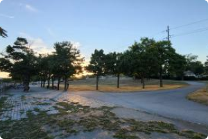

India Point Park
4.0 (3 Reviews) • Providence • Managed by the City of Providence • Updated October 1st, 2022
4.0 (3 Reviews)
In Providence
Managed by the City of Providence
Updated October 1st, 2022
4.0 (3 Reviews) • Providence • Managed by the City of Providence • Updated October 1st, 2022
4.0 (3 Reviews)
In Providence
Managed by the City of Providence
Updated October 1st, 2022
Located in the historic Fox Point neighborhood of Providence’s East Side, India Point Park is celebrated for its sweeping views of the Providence Harbor and Seekonk River. In addition to lighted, paved & stone dust walking paths along the water, the park includes a playground with ropes, swings and a sandbox. There is a ceremonial dock and a pedestrian bridge over Rt. 195 - connecting the park to the neighborhood. India Point Park is the location for the City’s annual 4th of July fireworks display, along with concerts and festivals throughout the summer...
What's this?
1.5 MilesWhat's this?
Driving Landmarks: Follow Gano Street southbound until it turns into India Street as you approach the park. The parking lot is just ahead on the left. In addition to the parking lot there is extensive roadside parking along India Street adjacent to the park.
Parking: Yes: Parking lot, 30 spaces, no overnight parking
ADA Accessible Parking Spaces? Yes
India Point Park is directly connected to the East Bay Bike Path.
The RIPTA 92 bus passes near the park on Wickendon Street. Get off near East Street and follow East Street two blocks to the footbridge over the highway.
Seastreak & RIPTA operate a ferry to Newport from a dock adjacent to the park.
Entrance Location:
201 India St, Providence, RI 02903
41° 49.072' N, 71° 23.428' W
Only trailheads related to this trail system are shown on this map.
To see all trailheads go to the main map.
For a downloadable copy, please click the button below.
Comments
4.0
3 Reviews
5 Stars
4 Stars
3 Stars
2 Stars
1 Stars
Help us do better by reaching out to us below.
Posted by Anonymous on October 17, 2022, 5:56 pm
Great park next to college hill!
Posted by Kelly Halstead on August 6, 2022, 4:26 pm
Perfect spot for a stroll anytime of day!! I love having a picnic in the shade of beautiful blooming trees. Picturesque sunsets!!

Posted by Hygiene for Providence on June 20, 2022, 8:07 am
There are no permanent restrooms at this park. There is no separation from bicycles and pedestrians on the walkways. The cyclists are a danger particularly on the stairway entrance.